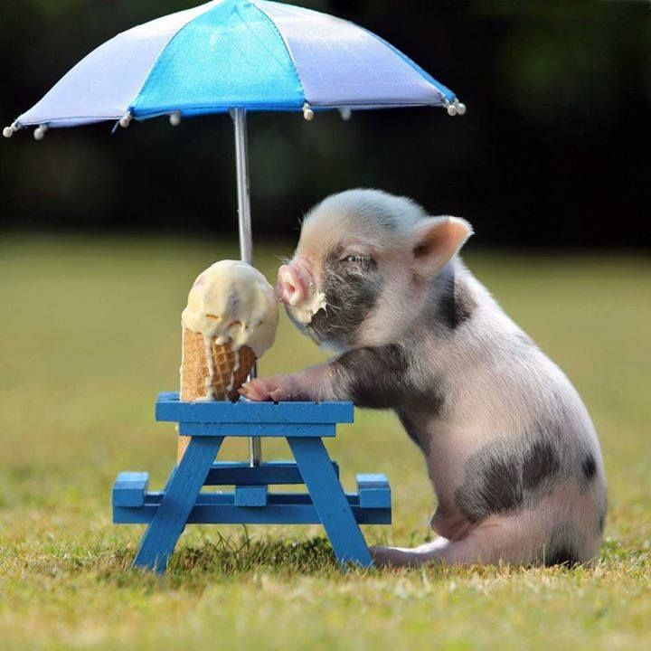

A website about the love and appreciation of all things sweet. Nothing but love and appreciation shown for the greatest gift. That's right, this has just become your favorite website ever.
Why not? Sweets have been getting a bad reputation. I don't believe they are being appreciated fully. They are there during our best and worst times. They are literally our truest friends. So these slivers of greatness should be celebrated as such.
Click me
↓
